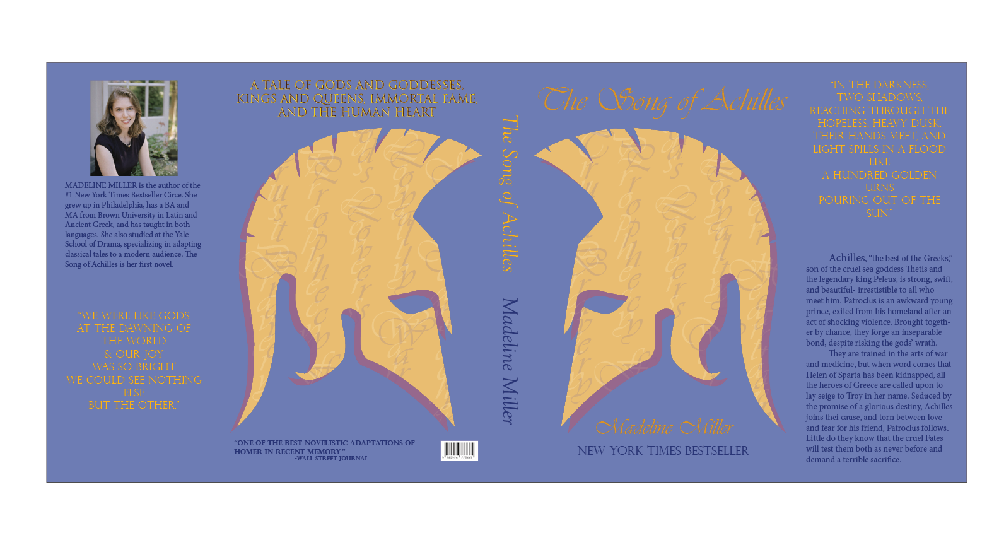
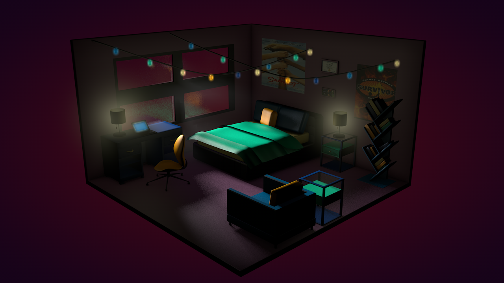

Created a social media promo video for Rubbish Comedy Theatre's inaugural show feat. Rumpleteaser Musical Improv. Built off of a tutorial by @eyedesyn then added vertex maps to invert textures.
Softwares utilized: C4D, Redshift, AfterEffects
Short animation celebrating ADHD Awareness Month. Created while interning with SmartCourse.io. The balloons are softbody simulations.
Softwares utilized: C4D, Redshift, AfterEffects
Science-fiction hallway modeled in C4D. Camera animated along a spline. Composited the control room screens with After Effects.
Softwares utilized: C4D, After Effects, Photoshop
Chose the best holiday to create an E-card for: Stimulus Check Day! Money moved using the puppet tool in AE.
Softwares Utilized: AfterEffects, Photoshop

Used InDesign to create a mock book cover redesign for "The Song of Achilles" by Madeline Miller. Used Illustrator to design the helmets.
Softwares utilized: InDesign, Illustrator.
I'm on a musical improv team that performs around NYC!
Talents utilized: Beautiful voice, dancing skills, and sharp wit.
Promotional video for Rumpleteaser Musical Improv. Modeled and lit the snowglobe. Used dynamics for the snow inside.
Softwares utilized: C4D, Redshift, AfterEffects
Promotional video for a new satirical musical about religion and American independence. Used formula deformer to create flag's movement.
Softwares utilized: C4D, Redshift, AfterEffects
PSA for Mental Health Awareness Month. Uses kinetic typography and 3D text layers to give a sense of movement/urgency.
Softwares utilized: After Effects, Photoshop, Illustrator
Mock social media promo for the Netflix show Locke and Key. Tried to create three different personalities for each key.
Softwares utilized: C4D, After Effects, Photoshop
Needed to create a postcard promoting healthy habits during COVID times. Used Photoshop to refine selections and mask.
Software utilized: Photoshop

Designed and modeled a bedroom in C4D. Played with lighting sources and limited color scheme. Added Survivor poster, because I love Survivor.
Softwares utilized: C4D, Photoshop
A curious robot!
Talents utilized: Curiosity, dancing skills, joy.